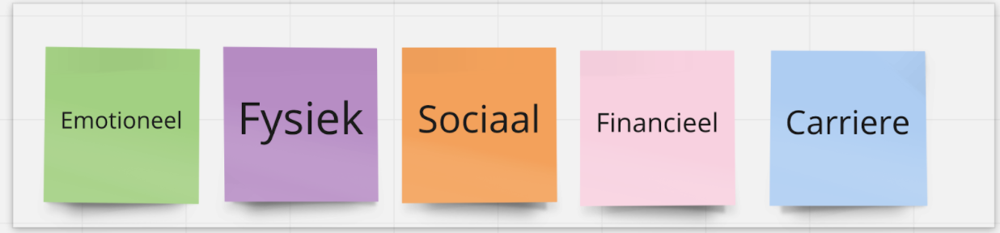
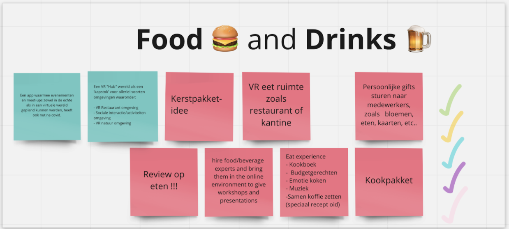

Met behulp van alle onderzoeksresultaten uit de analysefase zijn we als groep gaan brainstormen om zodanig tot een concept te komen dat gebruikt kan worden om de vraag vanuit Simac op te lossen. Voor deze brainstorm sessie hebben we het draaiboek document gebruikt als structuur om van een hoop ideeën tot een onderbouwd concept te komen.
Brainstorm sessie om tot een onderbouwd concept te komen.
Uit mijn onderzoek over trends was gebleken dat werknemers van Simac geen interesse hebben in de trend van het combineren van communicatie tools aangezien ze blij zijn met de communicatie tools waar ze nu gebruik van maken. Verder hebben ze ook geen interesse in AR, maar VR vinden ze wel interessant. VR nemen we daarom ook mee in het concept. Wat verder ook een belangrijke uitkomst was uit ons onderzoek zijn de 5 pijlers die belangrijk zijn voor het welzijn van de werknemers. (zie afbeelding hieronder) Deze 5 pijlers hebben we gebruikt om onze concepten te beoordelen.

Food & Drinks is een concept waar de focus ligt op eten en drinken. Het idee is om een platform te bouwen waarop de gebruikers recepten kunnen maken en vinden en deze delen en beoordelen. Hierbij kan een jaarlijks Simac kookboek uitgegeven worden en kunnen er verschillende kookworkshops worden georganiseerd in VR ruimtes. Het food & drinks concept raakt alle 5 de pijlers en VR wordt erin betrokken en uit de survey onderzoeken is gebleken dat de doelgroep hier open voor staat.

Nature & Relax is een concept waar de focus ligt op natuur en ontspanning. Het idee is om een platform te bouwen waarop de gebruikers verschillende mindfullness en yoga oefeningen kunnen vinden en deze uitvoeren in VR natuur ruimtes waarin ze dit samen met collega's kunnen doen. 3 van de 5 pijlers worden met dit concept geraakt.
Wij hebben ervoor gekozen om de concepten Food & Drinks samen te voegen met Nature & Relax.
Kiezen tussen Food & Drinks en Nature & Relax was lastig aangezien uit de survey bleek dat meer werknemers geïnteresseerd zijn in wandelen en natuur dan in koken, maar Simac in het verleden veel succes heeft gehad met kook evenementen. We hebben hierom gekozen om een platform te bouwen waarin beide concepten zijn geïntegreerd om tot een platform te komen waar werknemers vrijwillig aan kunnen deelnemen. Op deze manier hebben we meer raakvlakken met de doelgroep omdat de hoeveelheid activiteiten is vergroot.

Onze oplossing voor het versterken van de sociale interactie tussen werknemers van Simac, is het bouwen van een platform waarop de werknemers van Simac vrijwillig kunnen deelnemen. Op dit platform kunnen gebruikers kook recepten en activiteiten maken/plannen en zien en hier reviews op achterlaten. De activiteiten kunnen gerelateerd zijn aan het food aspect of en relax aspect en deze zijn te vinden in VR 3D omgevingen. De visuele uitwerking hiervan is in het product 'ontwerp' te vinden.
Sociaal platform voor het organiseren van activiteiten en delen van kook recepten.
Brainstorm Draaiboek document
Concept Proces